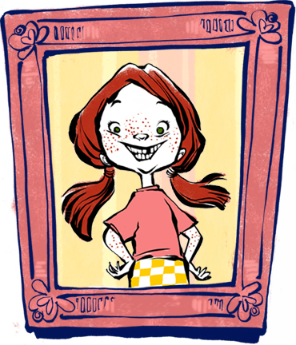

About Freckleface Strawberry
Once upon a time there was a little girl who was just like everybody else. She was seven. She was short. She could ride a bike. She was just like everybody else, except for one thing. She had red hair. And something worse...FRECKLES!
Meet Freckleface Strawberry: a red- haired and frecklefaced 7-year-old girl who's learning to love the skin she's in. Because after all, the things that make you different also make you YOU.